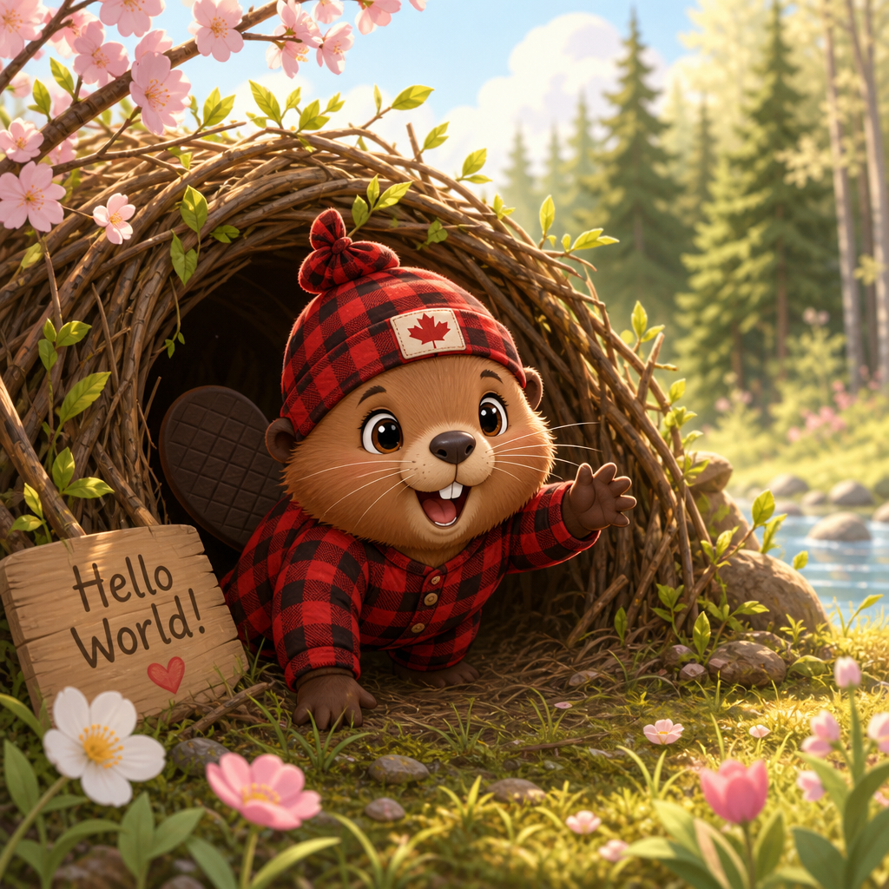
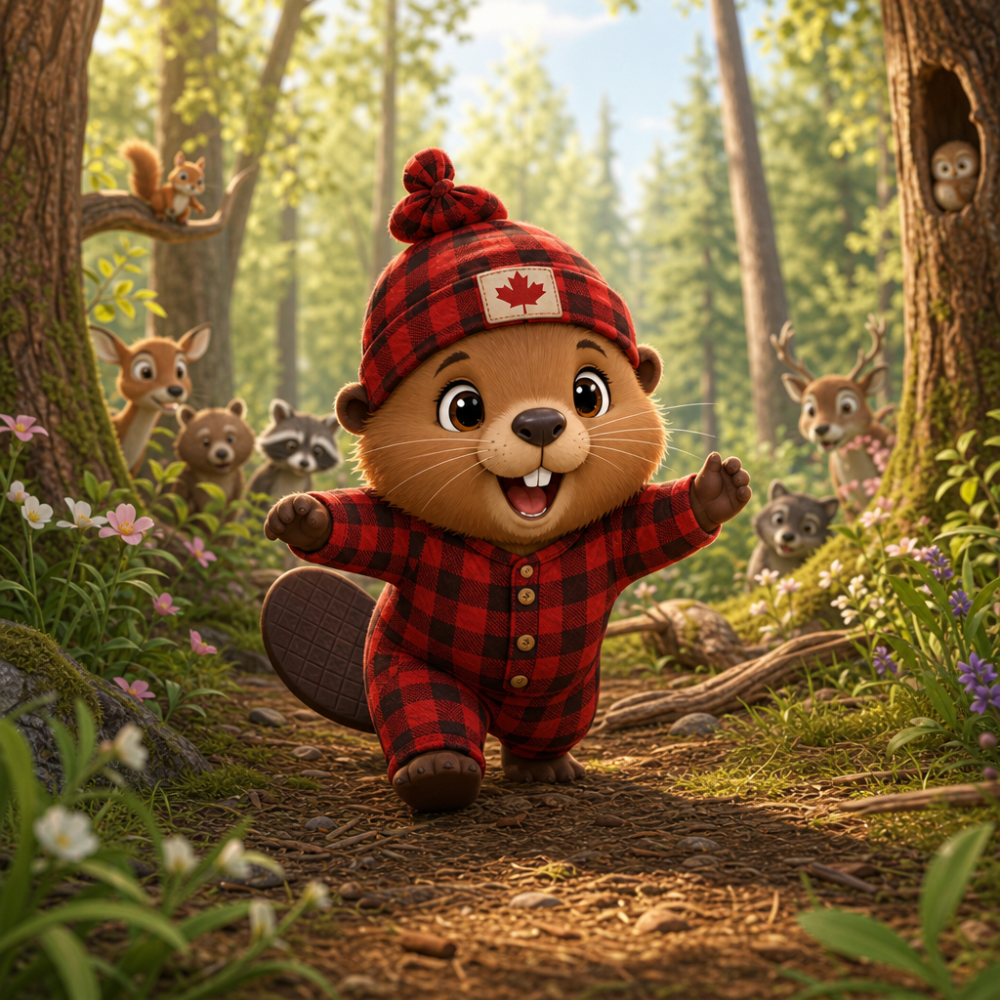
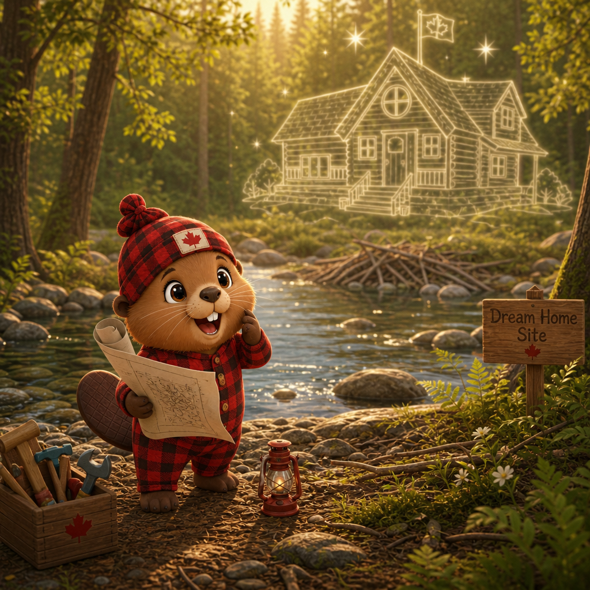
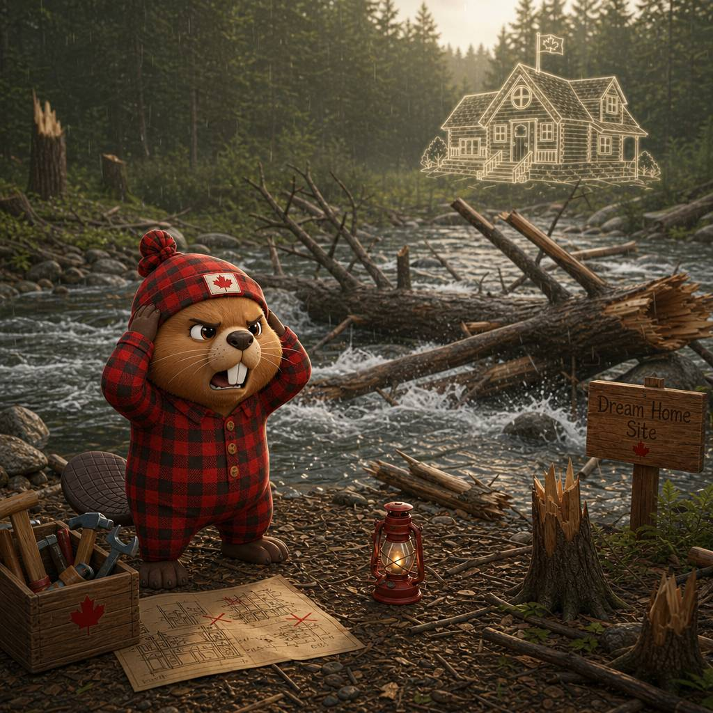
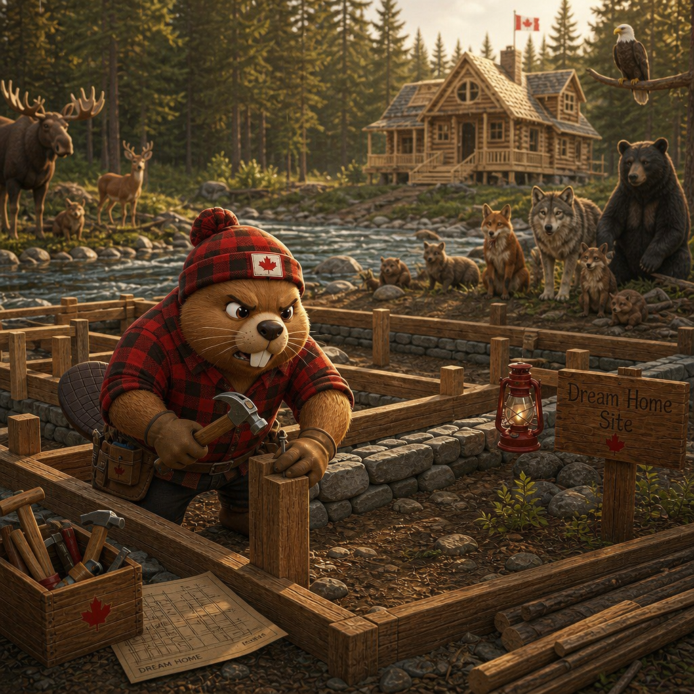
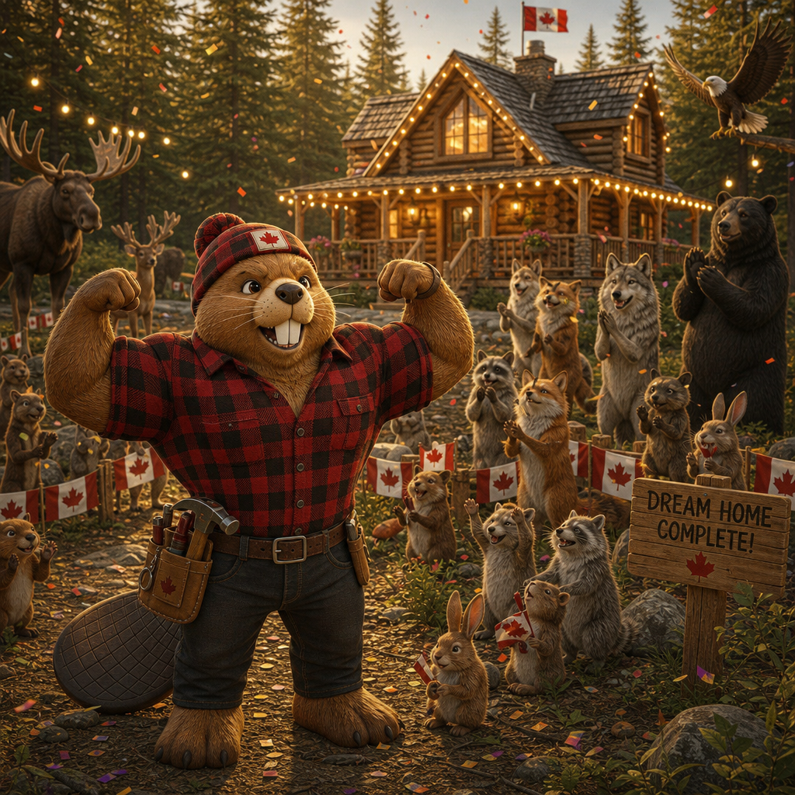
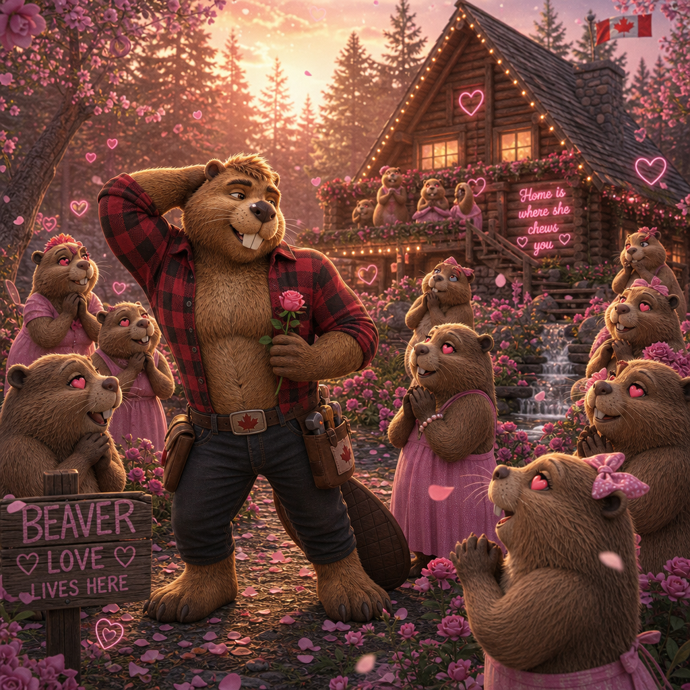
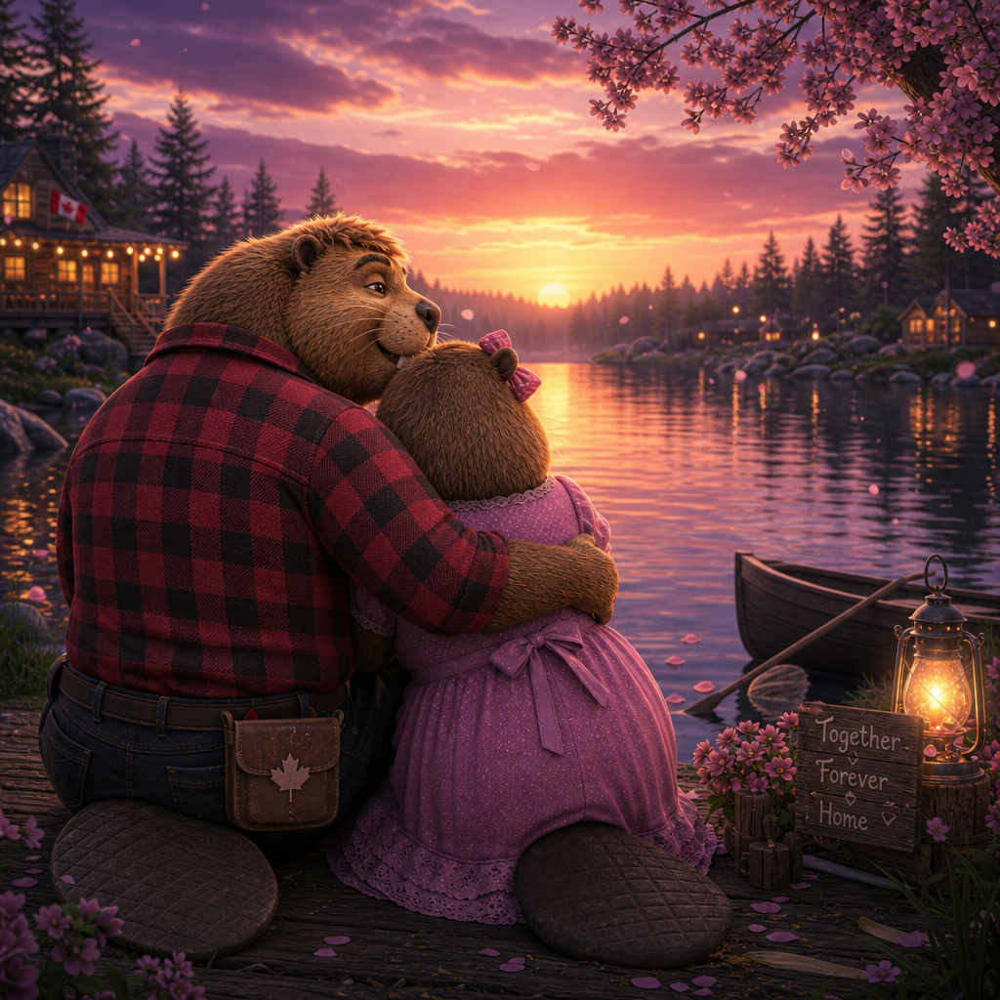
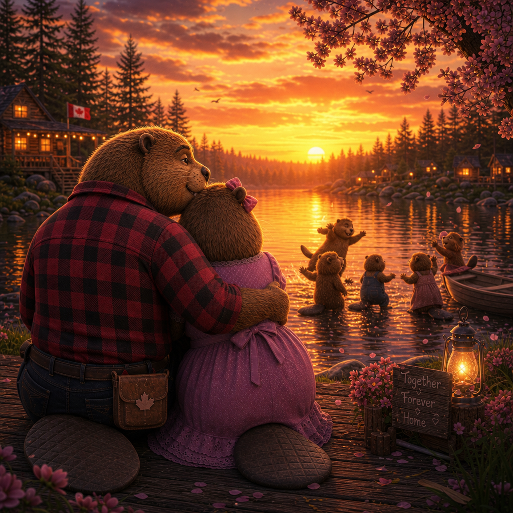

Born beneath maple boughs, the Royal Canadian Beaver’s life unfolds from a tender spring morning into a tale of curiosity, ambition, and hard‑won craft. As a youngster he explores sunlit creeks and discovers a golden idea by the riverbank; his early efforts lead to a nearly finished lodge that is then shattered by a sudden storm. Undeterred, he rallies the forest, rebuilds stronger than before, and stands proudly on a restored porch as the woodland admires his perseverance and the glow of his achievement.
Triumph brings attention, and in the warm light of late afternoons he finds a true companion, together they build a home filled with laughter and the patter of children. Years later, with silver at his muzzle and the lodge cozy behind them, he sits at sunset beside his mate while their offspring play, an amber‑lit farewell closes a life defined by resilience, love, and a quietly earned legacy.








